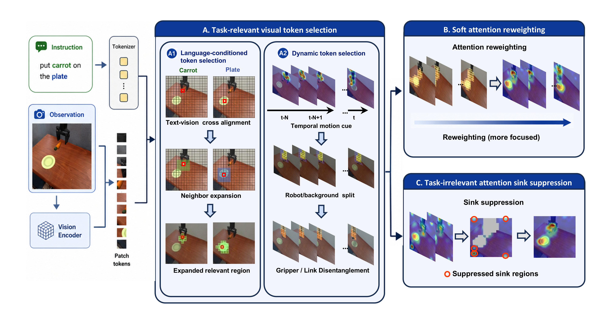
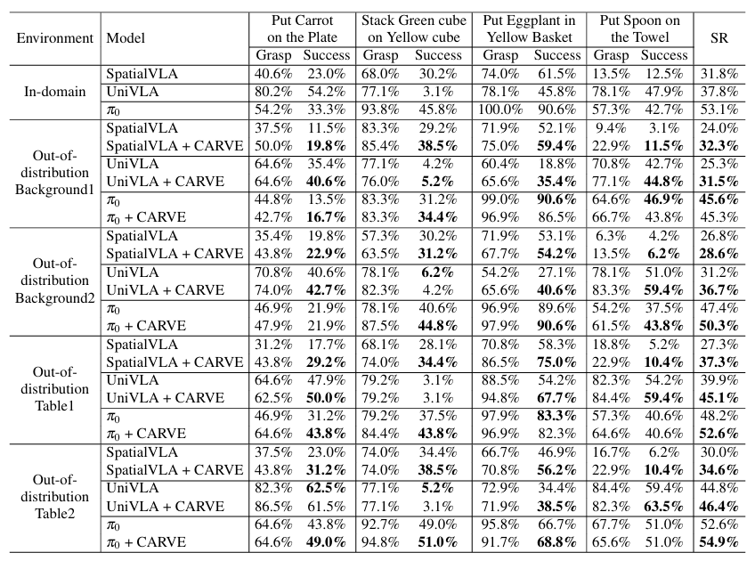
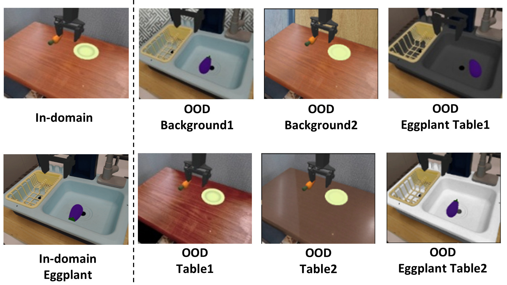
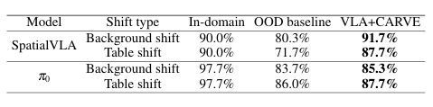
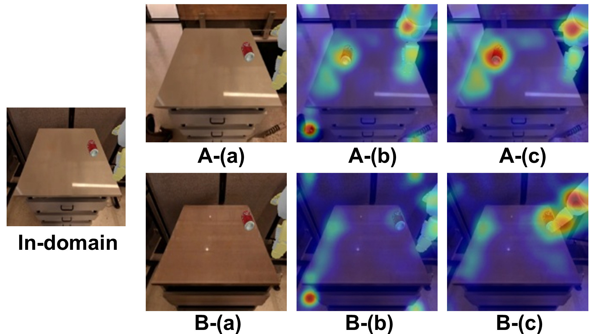
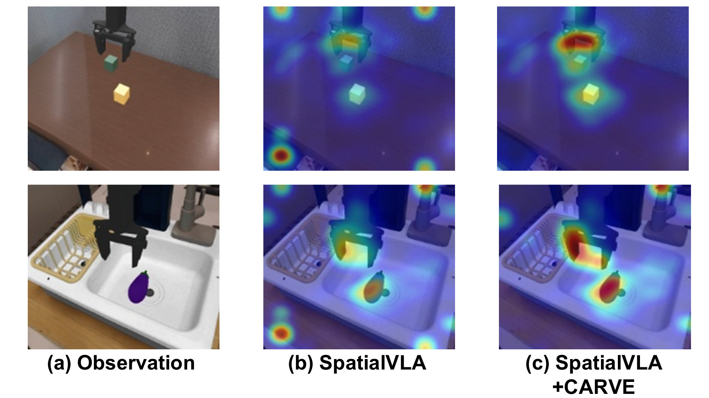
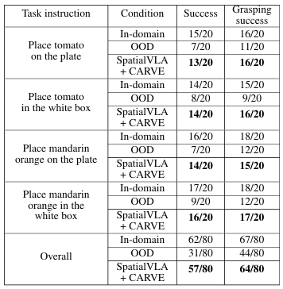
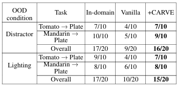
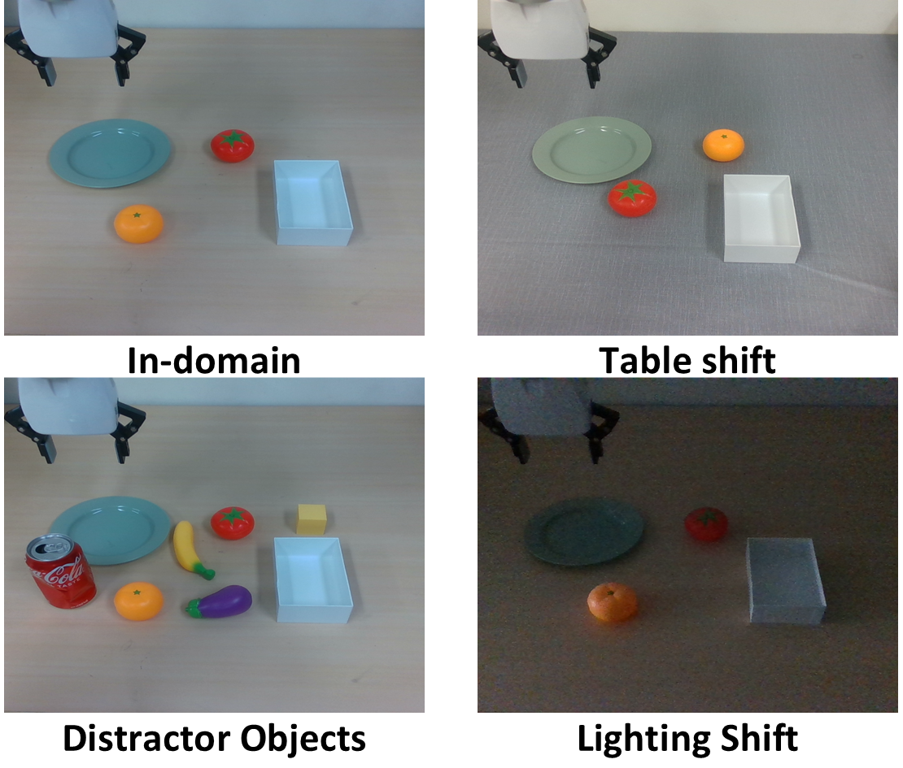

Vision-Language-Action (VLA) models directly generate robot actions from visual observations and language instructions. However, their performance may degrade under Out-of-Distribution (OOD) conditions where task-irrelevant visual contexts change. In this paper, we formulate visual distribution shift as an attention allocation problem between task-relevant visual evidence and task-irrelevant contextual cues, and propose CARVE, a training-free inference-time attention adaptation method.
CARVE estimates task-relevant regions using language-conditioned object/goal grounding and temporal gripper-centered execution cues. During action decoding, CARVE reweights image-token attention toward task-relevant regions while reducing the relative influence of task-irrelevant regions and suppressing persistent attention sinks.
Simulation results show that CARVE consistently improves OOD performance across all three VLA backbones: SpatialVLA, UniVLA, and π0. Real-world experimental results show consistent performance improvements under diverse task-irrelevant visual shifts, demonstrating that CARVE is effective for performing robust inference across different VLA architectures.

Figure 2. Overview of CARVE. CARVE identifies task-relevant source/goal and gripper-centered regions, softly reweights visual attention toward these regions, and suppresses persistent attention sinks in task-irrelevant regions while preserving the complete visual context.
1) Task-Relevant Region Estimation. CARVE uses the language instruction to ground the source and goal objects, while temporal execution cues identify the gripper-centered region. These object, goal, and gripper regions jointly define the task-relevant visual evidence required for manipulation.
2) Context-Preserving Soft Attention Reweighting. CARVE assigns higher relative attention weights to task-relevant visual tokens so that the action decoder focuses more strongly on regions directly related to task execution. Background and contextual tokens remain active rather than being removed, preserving useful global information such as workspace geometry and object-environment relationships.
3) Task-Irrelevant Attention Sink Suppression. CARVE detects persistent attention peaks in task-irrelevant regions when a patch receives abnormally high attention relative to its local neighbors. The detected sink is selectively reduced toward the level of neighboring non-sink patches, while high attention within task-relevant object, goal, and gripper regions is preserved.

We evaluate CARVE in the visual-matching settings of SimplerEnv. Tasks and evaluation configurations are held fixed while task-irrelevant backgrounds and workspace surfaces are varied. Representative in-domain and OOD observations are shown in Figure 3.
Four Bridge manipulation tasks are evaluated with frozen SpatialVLA, UniVLA, and π0 backbones. We compare the OOD baseline and CARVE under matched trials, reporting task and grasp success in Table 1.
For Pick Coke Can, SpatialVLA task success under background shift increases from 80.3% to 91.7% with CARVE; under table shift, it increases from 71.7% to 87.7%. Results for SpatialVLA and π0 are summarized in Table 2.


Figures 4 and 5 compare OOD observations and attention maps for the frozen policy and CARVE. Attention on task-irrelevant contextual regions is reduced while attention to relevant objects, goals, and gripper-centered regions is emphasized.


We evaluate four tabletop manipulation tasks with a 6-DoF xArm and an Intel RealSense D435i RGB camera: placing a tomato or mandarin orange on a plate or in a white box. The SpatialVLA-based policy is LoRA-fine-tuned on task demonstrations and then frozen; CARVE is applied only at inference time.
Figure 7 shows the in-domain scene and the table, distractor-object, and lighting shifts. Under table shift, overall task success increases from 31/80 to 57/80 with CARVE, and grasp success increases from 44/80 to 64/80 (Table 3).
Under distractor-object shifts, task success increases from 9/20 to 16/20; under lighting shifts, it increases from 10/20 to 15/20 (Table 4).



@misc{kim2026carve,
title={CARVE: Context-Preserving Attention Reweighting of Visual Evidence for Robust Vision-Language-Action Models},
author={Kim, Seo-Hyun and Park, Kwang-Hyun},
year={2026},
howpublished={Project page},
url={https://carve-vla.github.io/}
}